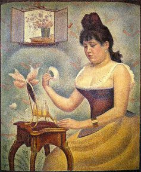

Georges Seurat,1859 – 1891,Post-Impressionism,French,"Georges-Pierre Seurat (French: [ʒɔʁʒ pjɛʁ sœʁa]; 2 December 1859 – 29 March 1891) was a French post-Impressionist artist. He is best known for devising the painting techniques known as chromoluminarism and pointillism. While less famous than his paintings, his conté crayon drawings have also garnered a great deal of critical appreciation. Seurat's artistic personality was compounded of qualities which are usually supposed to be opposed and incompatible: on the one hand, his extreme and delicate sensibility; on the other, a passion for logical abstraction and an almost mathematical precision of mind. His large-scale work, A Sunday Afternoon on the Island of La Grande Jatte (1884–1886), altered the direction of modern art by initiating Neo-impressionism, and is one of the icons of late 19th-century painting.",https://en.wikipedia.org/wiki/Georges_Seurat,43
